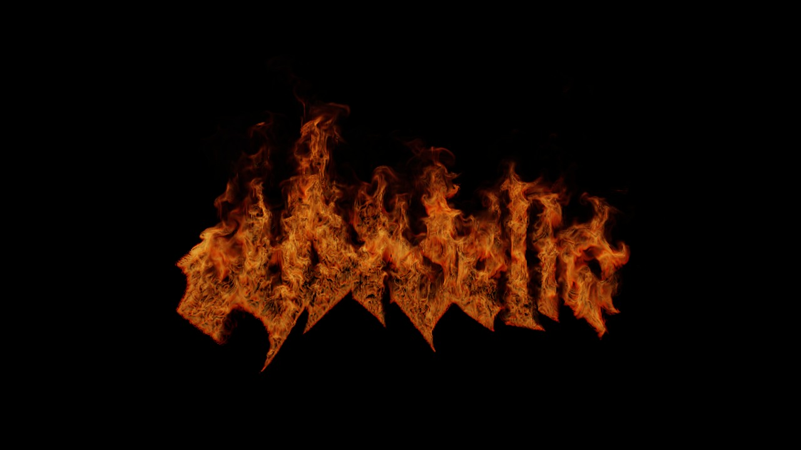

Material study / 02Seven elements. One mark.
Press play to watch
01 Combustion
Fire
Flame climbs through the sigil, with rolling turbulence, glowing edges and a trail of smoke.
Current film


Each film starts from this mark. The still shows the selected material; play the film to see its formation and release.